Indications that Pipettor Belts Need to be Replaced
The system reports encoder errors (position not reached) or problems with coordinates when no obstruction is visible, wire and flex connections have been checked and motor/encoder has been ruled out.
The tension feels non-uniform when moving pipettor along the x-axis by hand. Visually, the belts will ride in and out on the toothed pulleys.
Parts and Materials Required
- Adjustable crescent wrench
- Set of Hex Keys
- Knife
- Measuring tape or ruler
- Lab tape
- Parallel pipettor alignment blocks
 RACK BELTS
RACK BELTS
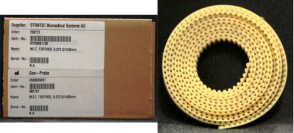

Note—Replace all four belts at the same time.
Time Required
- 2 hours
- 4 hours for Pipettor re-teaching and functional testing
Removal Procedure
- Put on proper PPE.
- Power down the Panther System.
- Remove the gantry shield, partition wall, and the front and back covers.
Note—You can move the system away from the wall for better access. - Create a working area by placing absorbent pads over dirty areas (e.g., Load Stations, Reagent Bay, Tip Drawers, Sample Bay, etc.)
- Move the Z-pipettors up and slide them in the Y direction towards the front of the system so the pipettors can move freely in x-direction clear of MagWash or Universal fluid bay pump manifold.
- Remove the tension screw as indicated by the green check marks in the diagram of the tension block assembly below.
Note—Do not loosen or remove the Y alignment screws. 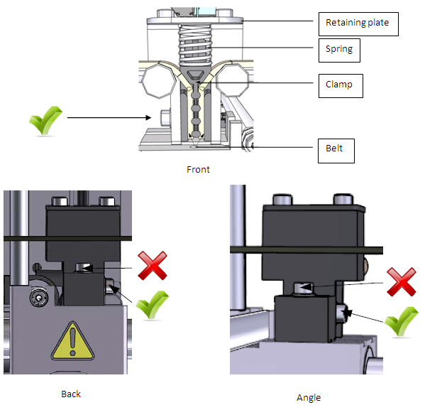
- Remove the clamp by moving the plate and spring out of the way. Use a 3 mm hex wrench to remove the two socket head cap screws circled in the image below.
Tip—The plate is spring loaded; remove one screw first. Apply pressure to the plate and loosen the second screw so it can rotate enough to remove the spring. Compress the spring and rotate the plate around. Remove the spring. 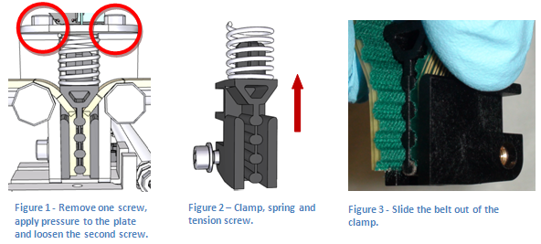
- Remove the belts from each pulley. The following image shows a pair of belts for the left Pipettor arm.
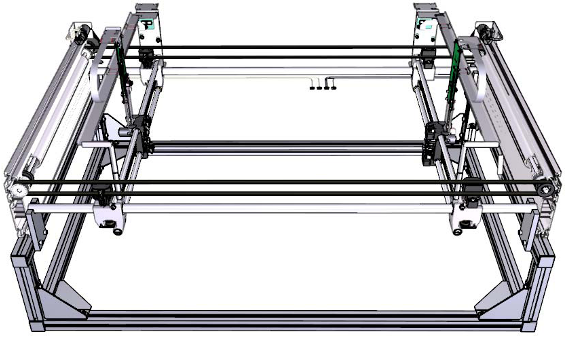
Replacement Procedure
- Before installing the belts, clean the rails with lint-free towels (and if necessary clean the linear bearings using 100% ethanol or isopropyl alcohol).
- Verify that the new belt length is 2335 mm; if it is not, cut the new belt so that it has the same number of teeth as the old belt. When measuring the new belt, measure from valley to valley of the belt as depicted below.
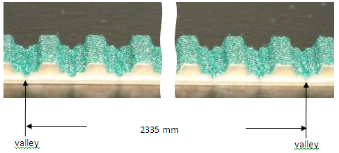
- Attach one end of the belt to the clamp. Make sure the last tooth is positioned as shown in the following image. The belt should also be fully seated in the clamp so there is no gap.
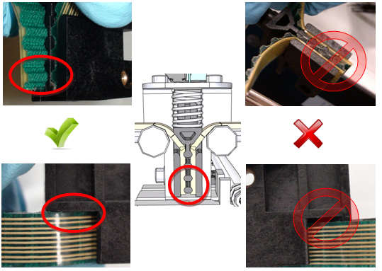
- Secure one end of the pulley on the tension block assembly to help hold the belt in place. Feed the belt around both pulleys then secure the other belt end into the clamp.
Tip—Place the clamped end of the belt in the tension block assembly to help hold the belt. Use tape to assist pulling the belt through each pulley. Note—Do not force the belt through the front of the chassis as the sharp edges can damage the belt. 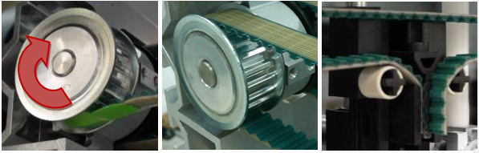
- Loosely thread the tension screw into the assembly. Seat the spring in the correct position and secure the retaining plate using the two screws.
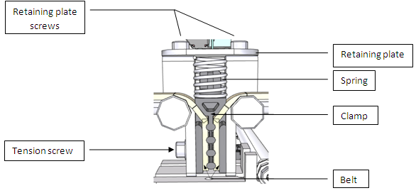
- Verify the position of the tension screw is roughly in the middle of the tension slot. The screw should not be seated against the top or the bottom. If the screw is seated too high or too low the belt is not seated correctly on the pulley. Screw sits too high: there is not enough belt between the toothed gear and the tension assembly. Screw sits too low: there is too much belt between the toothed gear and the tension block assembly. Adjust the belt in the proper direction so the screw sits in the correct position.
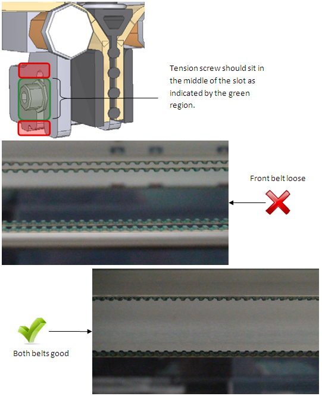
- Verify the pipettor arms are parallel. Use the blocks to check the pipettor arms are parallel. Set the first block at one of the ends shown in the diagram below. Place the second block at the other end allow to seat itself, do not force it down. If the block does not seat itself, determine which pipettor arm is out of position. Adjust the belt accordingly.
Note—If the system is not parallel, the system can fail coordinate teaching or have tip pick issues. 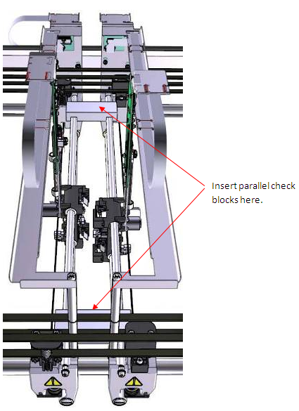
- Once everything is in place, tighten the tension screw to lock the belt tension. Reinstall all previously removed components (panels, covers, etc.).
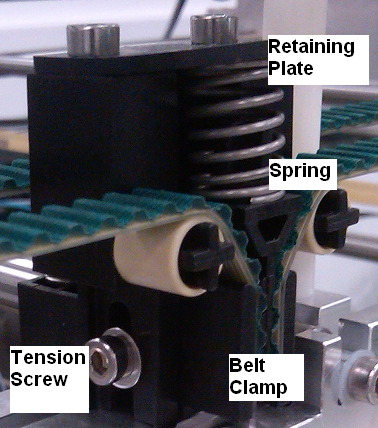
 button at the top of the page to send feedback, comments, or change requests.
button at the top of the page to send feedback, comments, or change requests.